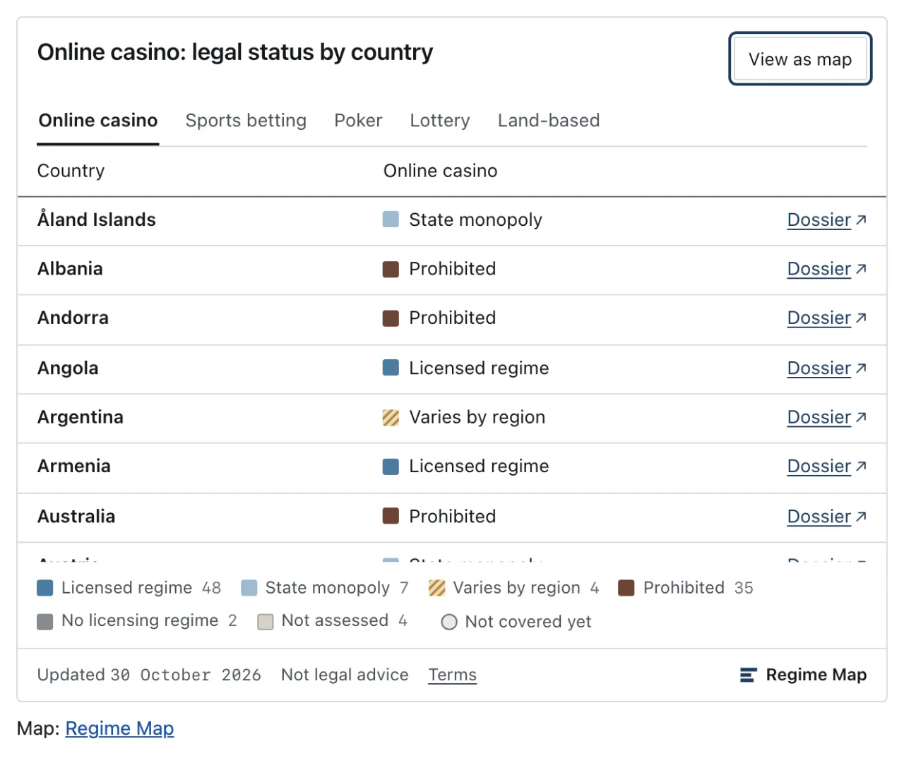
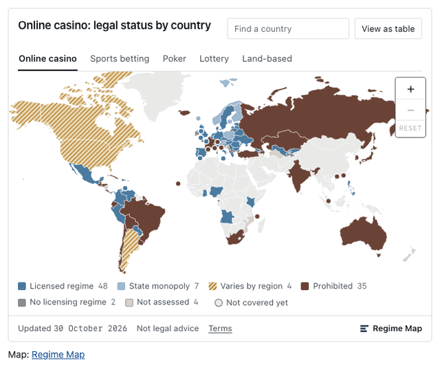
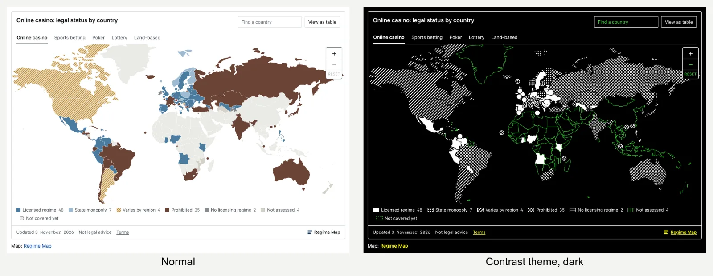
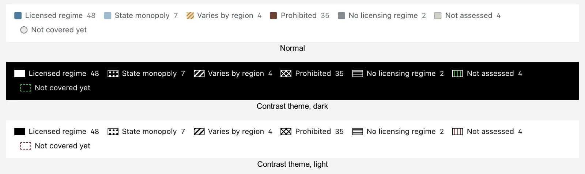
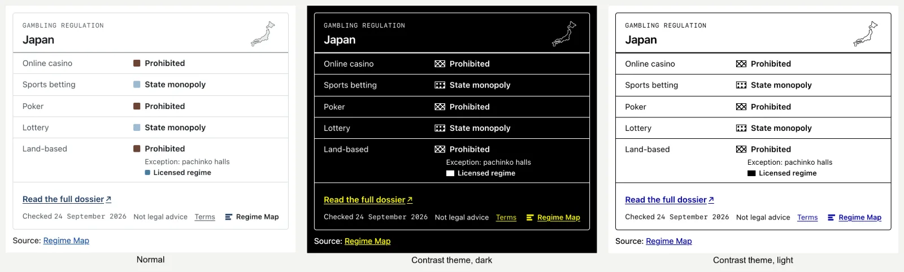
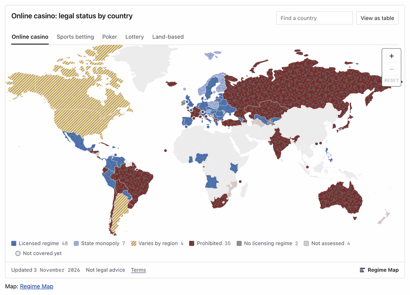

The table view
“View as table” shows the same data as the map for the product on screen: country, status and a link to each dossier. The rows are sorted in the embed language’s own alphabetical order, so Norwegian puts Å last and Russian follows the Cyrillic alphabet. It is the accessible version of the map, not an afterthought.


Keyboard
| Key | What it does |
|---|---|
| Tab | Moves between the embed’s controls. The product tabs are one stop, the map is one stop, and “Find a country” is one stop. |
| ← → ↑ ↓ | On the map: move from country to country. On the product tabs: move between the five products. |
| Home End | On the map: jump to the first or last country |
| Enter | On the map: open the country’s dossier link. In “Find a country”: pick the match, zoom to the country and open its details. |
| Esc | Close the country’s details |
| + − 0 | Zoom in, zoom out, reset, while the map has focus |
Details open on hover and on keyboard focus alike. The mouse wheel and pinch gestures are left to the host page, so the page scrolls and zooms as the reader expects.
Screen readers
The drawing itself is hidden from screen readers. In its place the map carries a text summary for the product on screen, for example “Online casino status in 100 countries: 48 licensed regime, …”, and its name says which product is shown, in all 39 languages. The table view and the country card give the full detail as text, with the dossier links.
Touch and motion
- Every target is at least 44 px, small-state dots included: their tap area is larger than the dot.
- On touch screens and in narrow embeds, a tap opens the country in a sheet at the bottom of the embed instead of a tooltip, so the map stays in view.
- With
prefers-reduced-motion, the embed turns its animations off.
Windows contrast themes
In a Windows contrast theme, the browser repaints the page with a handful of the reader’s system colours. A map that relies on colour alone loses its key there: the legend’s swatches go blank, and nothing says which colour means which status. Here every status keeps its own texture, drawn in the theme’s colours.
| Status | Texture in a contrast theme |
|---|---|
| Licensed regime | solid |
| State monopoly | dots |
| Varies by region | diagonal hatch |
| Prohibited | cross-hatch |
| No licensing regime | horizontal lines |
| Not assessed | vertical lines |
| Not covered yet | empty, with a dashed outline |
The textures are drawn only in the theme’s own system colours, so they invert correctly in dark and light themes. Small-state dots grow and get a halo, a lawful exception keeps its asterisk pattern, and keyboard focus and the selected country use the system highlight colour. Nothing needs switching on: the embed follows the reader’s system, in the script and iframe forms alike, and the normal look is unchanged.
Who sees this: readers who turn on a contrast theme in Windows 10 or 11 (Settings → Accessibility → Contrast themes) in Edge, Chrome or Firefox, or who set Firefox to override page colours. We tested it in Chromium’s forced-colours emulation, in its light and dark palettes; it has not yet been tested on a real Windows machine.



